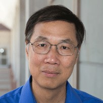
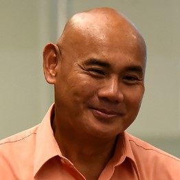
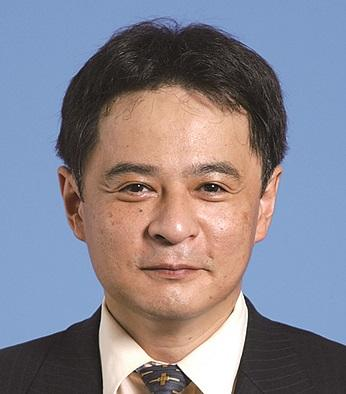

|  | |
 |
Marcus Textor -- Prof. Dr. (PI), Biointerfaces, ETH Zurich, Switzerland. |
|  | Danilo A. Tagle --Associate Director for Special Initiatives, National Center for Advancing Translational Sciences, National Institutes of Health (NIH), USA. |
Kaiming Ye --Professor of Biomedical Engineering and Pharmacology, State University of New York at Binghamton, USA. |
|
|  | Yasuyuki Sakai -- Professor of Chemical System Engineering，University of Tokyo，Japan |
 |
Wenmiao Shu -- Professor of Biomedical Engineering, Department of Bioengineering，University of Strathclyde，UK. |
Hanchuan Peng -- Director, SEU-ALLEN Joint Center; Allen Institute for Brain Science; Fellow, AIMBE. |
|
 |
Yu Shrike Zhang -- Instructor of Medicine, Associate Bioengineer, Brigham and Women's Hospital, Harvard Medical School, USA. |
Bin Xu --Assistant professor, Department of Psychology, Columbia University, USA. |
|
 |
顾忠泽-- 长江学者、国家杰出青年基金获得者，东南大学生物科学与医学工程学院院长。 |
席建忠 --国家杰出青年基金获得者，北京大学工学院教授。 |
|
孙啸 --江苏省生物医学工程学会副理事长，生物信息学专业委员会主任，东南大学教授。 |
|
郭安峰 --美国百时美施贵宝制药公司中国区副总裁。 |
|
于春萍 --美国礼来制药公司中国肿瘤研发部副总监。 |